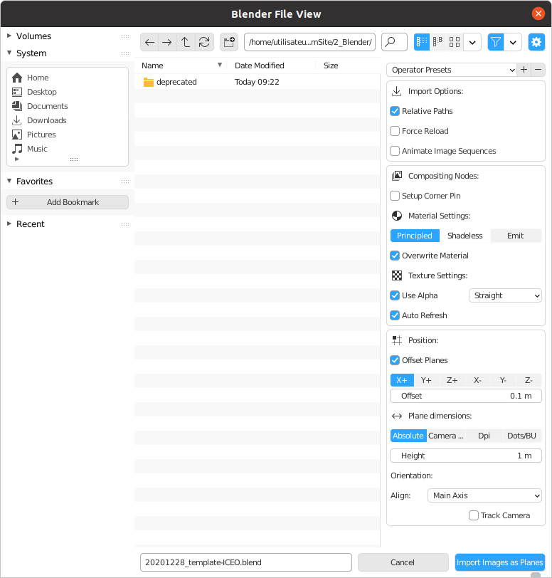
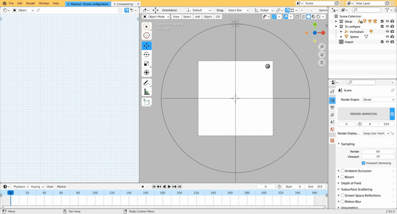
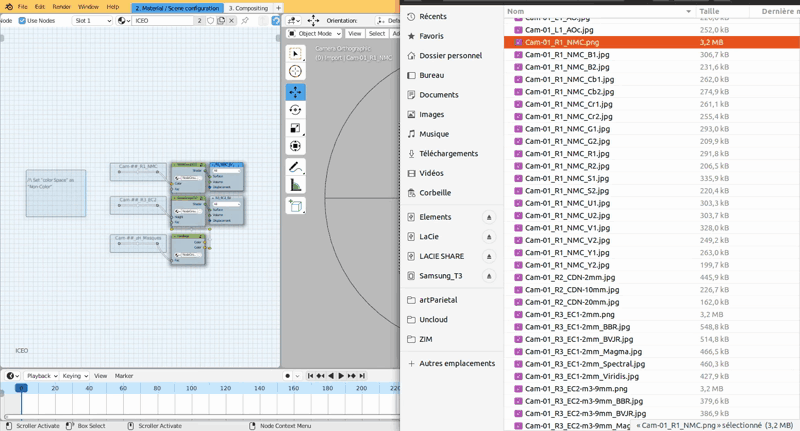

Créée le mardi 23 mars 2021
Matériaux nécessaires
Parmi toutes les images produites à l'issue de l'étape PETRA, nous aurons besoin de trois images :
- Cam-##_R1_NMC.png
- Cam-##_R3_EC2-#mm.png
- Cam-##_zH_Masques.png
Ces images seront utilisées dans le fichier gabarit "####_template-ICEO.blend".
Le paramétrage du fichier est réalisé en quelques étapes.
Créer le plan
Grâce à l'extension "import images as planes", nous allons pouvoir créer un plan exactement aux proportions de l'image que nous voulons rééclairer virtuellement. Il est possible de choisir n'importe quelle image générée pendant l'étape PETRA ; la seule condition étant qu'elle soit issue de la même caméra.
Il est possible de paramétrer la manière dont le plan sera créé. Ce sont normalement les options par défaut, mais les paramètres sont rappelés dans l'image suivante :

{kind=link}
Le plan est créé avec un matériau comprenant l'image que nous avons choisie. Il suffit d'appliquer simplement le matériau prédéfini "ICEO".

{kind=link}
Configurer le matériau "ICEO"
Ce matériau prédéfini doit maintenant être alimenter par les trois images citées au début de cette page :
- Cam-##_R1_NMC.png
- Cam-##_R3_EC2-#mm.png
- Cam-##_zH_Masques.png
Un simple glisser-déposer permet de les importer dans Blender. Il suffit ensuite de les connecter aux trois puces en attentes.
Les images sont interprétées par défaut comme des images sRGB. Pour un résultat optimal, il faudra spécifier que l'espace de couleur des images "Cam-##_R1_NMC.png" et "Cam-##_R3_EC2-#mm.png" est "Non-Color". La question ne se pose pas pour "Cam-##_zH_Masques.png".

{kind=link}
En choisissant l'affichage "rendu" dans l'espace de travail, nous pouvons désormais visualiser la surface rééclairée virtuellement.
Il est possible de basculer entre un éclairage du volume (avec "R1_NMC_EV") et un éclairage "aplati" (avec "R3_EC2_EV").
Pour modifier l'azimuth de la lumière, il suffit de jouer avec le curseur de la timeline ; pour modifier l'inclinaison, modifier la rotation en X du manipulateur "Inclinaison".

Configurer le rendu (1/2)
Quelques éléments sont à paramétrer : les dimensions des images qui vont être calculées, le pas de la lumière en azimuth et l'inclinaison de la lumière.
Principe du rendu des images
Le principe consiste à rendre une animation s'étalant de 0 à 359 (1 image = 1° en azimuth) ; il faudra calculer une nouvelle animation pour chaque changement d'inclinaison de la lumière.
Définir les dimensions des images qui vont être rendues
Les dimensions des images peut être facilement obtenue en sélectionnant une des trois images insérées dans le matériau "ICEO" (panneau latéral droit / properties).
Ces valeurs doivent être recopiées dans le panneau des propriétés, onglet output properties.
Définir le pas de la lumière en azimuth
Dans ce même onglet output properties, nous pouvons définir le pas en azimuth entre chaque rotation de la source lumieuse.
Par défaut, nous recommandons :
- R1_NMC_EV : step = 15
- R3_EC2_EV : step = 10
Définir l'inclinaison de la lumière
La manipulation a été réalisée dans la capture vidéo précédente
- Sélectionner le manipulateur "Inclinaison"
- Dans le panneau latéral droit de l'espace 3D, modifier la rotation en X. Il est possible de
Par défaut, nous recommandons :
- R1_NMC_EV : inclinaison = 0° ; 5° ; 10° ; 15° et 20°
- R3_EC2_EV : inclinaison = 10°
{kind=link}
Configurer le rendu (2/2)
Dans l'onglet compositing :
- Connecter correctement la puce avec la boîte terminale en fonction de la couche d'information sélectionnée dans le matériau
Les images sont rendues dans le même dossier temp que les images produites au cours de l'application de PETRA
Suite des opérations
La mise en page de la description géométrale peut être poursuivie.